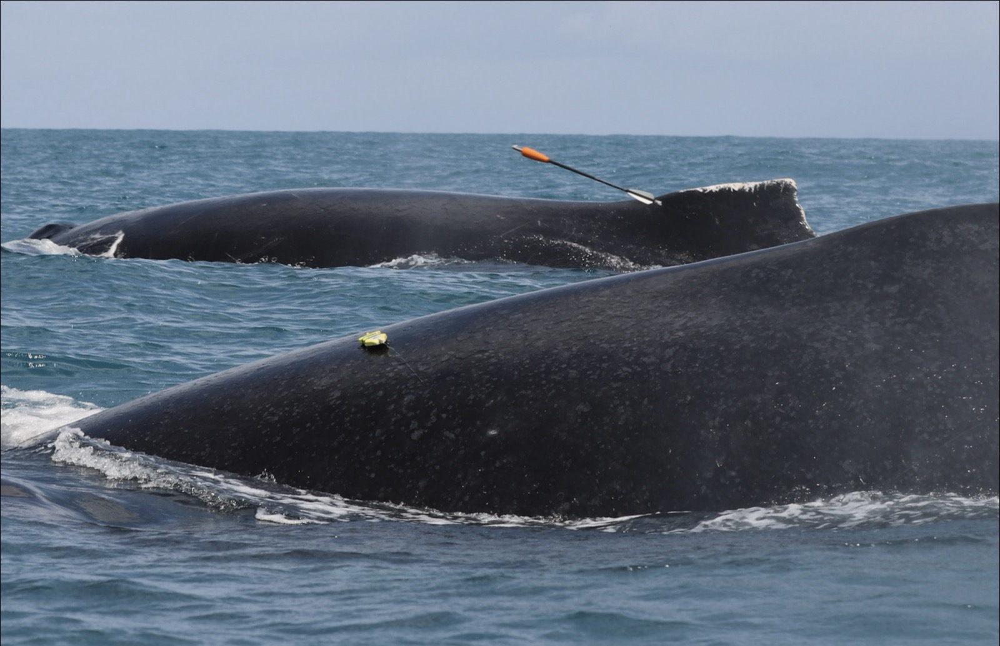

FaunaLabs · Hardware Engineering Intern
FaunaTag — Casing Design for a Non-Invasive Whale Tag

FaunaTag is a non-invasive biologging tag developed by FaunaLabs, a nonprofit research organization focused on whale and marine mammal conservation. It attaches to whales and dolphins with a suction-cup mechanism, capturing movement, acoustics, depth and temperature, and bio-optical signals to give researchers a rich view of an animal's experience without disrupting its natural behavior.
I'm leading the design and CAD development of FaunaTag's casing — the enclosure that houses its full sensor suite (an IMU for movement, a hydrophone for acoustic recording, depth and temperature sensors, and bio-optical sensing) and keeps it reliable through rugged field deployment in remote ocean environments.
Designing for this kind of deployment means treating waterproofing, durability, and the suction-cup attachment interface as first-order constraints rather than afterthoughts — every shape decision has to hold up against saltwater, pressure, and the physical reality of being mounted on a moving whale.
I'm working alongside a multidisciplinary team to integrate the sensor suite into the casing and optimize its form factor, applying principles of biomedical device design and mechanical resilience to support ongoing field studies and data collection on whales off the coast of Brazil.
